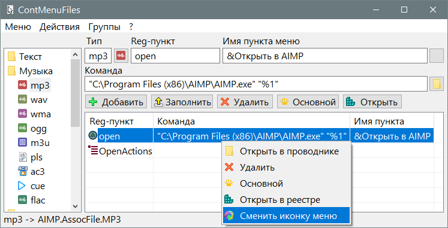

ContMenuFiles
Назначение
Настройка контекстного меню файлов (ассоциации, значки).

Взаимосвязанные
ContMenuFiles
Отличие
Версия ContMenuFiles на AutoIt3
- Создавалась во времена WindowsXP, поэтому многие вещи могут не работать на современных версиях Windows, например "Обновить кэш иконок".
- Здесь используется качественная библиотека для экспорта данных реестра.
Версия ContMenuFiles на PureBasic
- Автоматически добавляет иконку пункту меню.
- Если файл не зарегистрирован, то он определяется как неизвестный "Unknown" (см. строку состояния) и тут недостаток нужно следить куда добавляется пункт меню, так как это будет наполнять раздел "Unknown", вместо-того чтобы регистрировать расширение и задавать ему prog_id.
- Добавлен внешний файл SetUserFTA для регистрации с подсчётом контрольной суммы.
Описание
Как пользоваться программой:
- В списке слева выбираем тип файла, в списке справа появляется пункту меню связанные с этим расширением файла.
- Кидаем *.exe или *.lnk файл в окно программы, это сопровождается заполнением полей, которые будут добавлены в реестр: командная строка, имя пункта и раздел реестра.
- Нажимаем кнопку
 Добавить и пункт появляется в списке ниже. Теперь можно проверить что пункт появился и в меню проводника для этого типа файла.
Добавить и пункт появляется в списке ниже. Теперь можно проверить что пункт появился и в меню проводника для этого типа файла.
- После изменений рекомендуется выполнить "Группы ➜ Выполнить SetUserFTA для всех, это сгенерирует хеш, чтобы Windows согласился с вашими настройками, иначе он для каждого изменённого типа файла по разу спросит действительно ли вы хотите использовать эту программу для открытия этого файла.
А теперь детали:
- Так как неудобно добавлять одну и ту же программу для десятка однотипных расширений, то делаем групповое действие "Группы ➜ Добавить пункт в группу, это добавит пункт меню для всех файлов в группе. Для этого нужно сначала выбрать любое расширение из группы, чтобы программа добавила именно в эту группу.
- Сменить иконку - сделать клик на кнопке с иконкой, откроется диалог выбора dll в которой можно выбрать иконку. Далее нажать "Меню ➜
 Обновить кеш иконок, но делать это лучше после смены нескольких иконок, так как излишне обновлять кеш после каждой иконки. Также нажмите Обновить дерево, чтобы видно было изменение иконок в дереве, при этом изменение иконок может произойти для нескольких файлов, если у них одинаковый ProgID, например для htm и html файлов.
Обновить кеш иконок, но делать это лучше после смены нескольких иконок, так как излишне обновлять кеш после каждой иконки. Также нажмите Обновить дерево, чтобы видно было изменение иконок в дереве, при этом изменение иконок может произойти для нескольких файлов, если у них одинаковый ProgID, например для htm и html файлов.
- У обоих списков есть контекстное меню, которое позволит вам дополнительные действия:
- Для дерева:
- Открыть в реестре - тут понятно, что откроет то место в реестре где прописано расширение или команда.
- Изменить иконку файла - тоже что клик на кнопке с иконкой.
- Изменить ProgID - редко используемый пункт, но всё же позволит вам в том числе назначить свою иконку для определённого файла если он ранее был привязан к общему, например к текстовому типу "txtfile". Например если у вас css и php был привязан к "txtfile" и нельзя было назначить этим файлам разные иконки, то смена ProgID на "cssfile" и "phpfile" позволит назначить своё меню и иконку для этих типов файлов (ремарка: вместо этого можно использовать Создать расширение и указать иной ProgID). Также это можно использовать в ситуации, когда необходимо создать свою ассоциацию не перезаписывая системные, например mp3 имеет DropTarget, CLSID, которые мешают переназначить программу, файл всегда открывался в системном медиаплеере, по крайней мере в WindowsXP у меня были с этим проблемы.
- Для команд - пунктов меню:
- Основной - делает этот пункт первым в меню и соответственно клик по нему сопровождается выполнением этого пункта. По умолчанию это "open". Чтобы не переименовывать пункт в "open" для смены действия по умолчанию можно просто задать пункт основным.
- Остальные пункты понятны из названия. Разве что Сменить иконку пункта в отличии от дерева меняет иконку в меню для указанного пункта, чаще иконки вообще нет, но проводник позволяет её назначить. Можно даже существующие пункты меню без иконки сделать с иконками. По умолчанию будет использоваться иконка исполняемого файла.
- Осталось 3 пункта:
- Показать отсутствующие - позволяет вам увидеть для каких расширений у вас ничего не прописано.
- Создать расширение - если тип файла не существует совсем, то этот пункт создаёт, предлагая вам задать ProgID и использовать поля для вставки первой команды.
- Экспорт расширений (одного, группы, всех) создаёт reg-файл для восстановления. На каждое расширение используется 3 раздела реестра (расширение, ProgID и FileExts). Выполняется стандартный экспорт реестра в файл и объединение временного файла в суммирующий (3 пустых строки отделяют части).
- Обращайте внимание на ProgID, чтобы не добавлять меню для Unknown, так как это универсальный тип не ассоциированного файла, меню которого появляется для не ассоциированных файлов, проще говоря файлов без иконок. Добавьте в это меню Hex-редактор и вы всегда будете по наличию этого пункта замечать, что это раздел Unknown.
- При добавлении пункта меню в группу файлов тип Unknown игнорируется, поэтому смело можно использовать групповое добавление команд, без необходимости в дальнейшем чистить раздел Unknown.
- Настройки ini-файла
- Очень важно: можно полностью перестроить дерево расширений файлов с помощью ini-файла, то есть задать свои предпочтения в выборе файлов, убрать ненужные, переименовать разделы, программа всего лишь использует эти данные для построения списка.
- ProgID = %sfile - здесь задаётся маска при создании новых расширений, то есть если у вас расширение cfg и вы создаёте для него ProgID, то в тексте %sfile переменная %s заменяется на cfg и получаем cfgfile, аналогично для css будет cssfile. Но это маска по умолчанию, можно задать уникальные маски для каждого раздела, например добавить в раздел [ProgID] параметры:
- Архивы = 7-Zip.%s
- Видео = mplayerc.%s
- Музыка = AIMP.AssocFile.%s
- теперь для этих разделов (Архивы, Видео, Музыка) при создании расширения будет использоваться соответствующая маска
- SetUserFTA = 1 - расширения добавляются с помощью утилиты SetUserFTA, которая идёт в комплекте. Автор заявляет что она прописывает хеш, необходимый для доверенной ассоциации.
- CRCULM = 0 - не используется, но в будущем хотел добавить флаг определяющий в какой раздел прописывать данные, в HKCR (сейчас используемый) или HKCU (для текущего пользователя) или HKLM (для всех пользователей)
- TreePlus = 1 - стиль дерева с плюсиком
- AutoSize = 1 - автоподстройка ширины колонок под текст. 0 - нет автоподстройки. Если число больше 100, то нет автоподстройки, и число указывает ширину второй колонки.
- forcelang = 0 принудительно выбрать язык. 0 - автоматически (из файла Lang.txt или русский если русская ОС, или англ. в других случаях), 1 - англ. встроенный язык, 2 - русский встроенный язык. Если вы из бывших советских республик и русский не включается автоматически, то задать 2, чтобы включить принудительно.